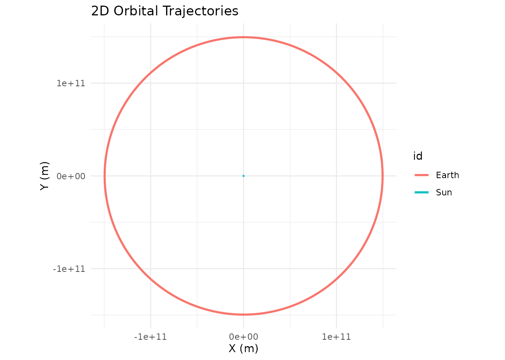
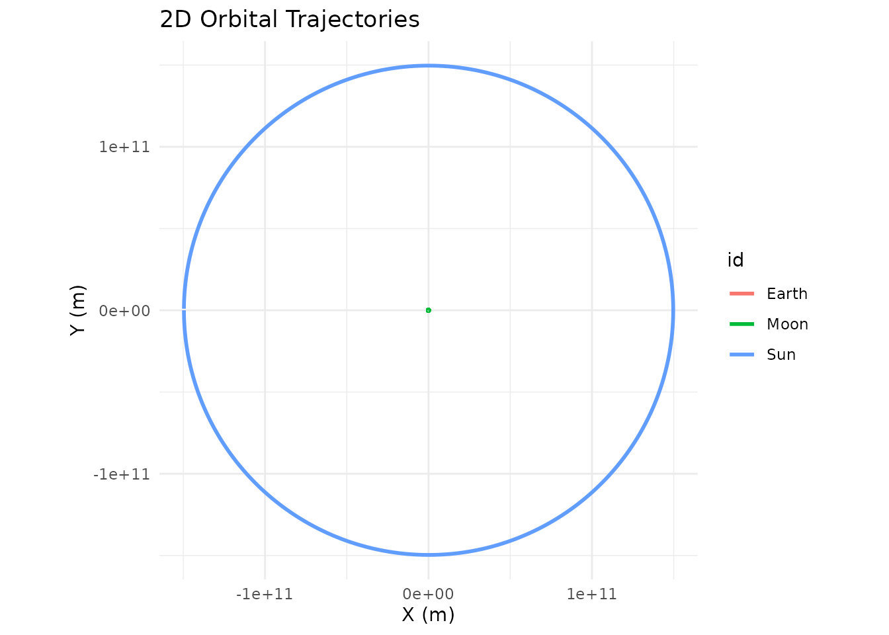

library(orbitr)
#>
#> Attaching package: 'orbitr'
#> The following object is masked from 'package:stats':
#>
#> simulateThe Earth-Moon System
A standard 28-day lunar orbit. One-hour time steps.
create_system() |>
add_body("Earth", mass = mass_earth) |>
add_body("Moon", mass = mass_moon, x = distance_earth_moon, vy = speed_moon) |>
simulate(time_step = 3600, duration = 86400 * 28) |>
plot_orbits()
The Sun-Earth System
A full year with daily time steps.
create_system() |>
add_body("Sun", mass = mass_sun) |>
add_body("Earth", mass = mass_earth, x = distance_earth_sun, vy = speed_earth) |>
simulate(time_step = 86400, duration = 86400 * 365) |>
plot_orbits()
The Three-Body Problem (Sun-Earth-Moon)
Because orbitr uses N-body gravity, nested hierarchies
require no special setup. Piggyback the Moon’s initial conditions onto
Earth’s using simple vector addition. Note that at this scale, the Earth
and Moon orbits overlap — the Earth-Moon distance (~384,000 km) is tiny
compared to the Earth-Sun distance (~150 million km). Use
shift_reference_frame("Earth") (shown in the next example)
to zoom into the Earth-Moon subsystem:
create_system() |>
add_body("Sun", mass = mass_sun) |>
add_body("Earth", mass = mass_earth, x = distance_earth_sun, vy = speed_earth) |>
add_body("Moon", mass = mass_moon,
x = distance_earth_sun + distance_earth_moon,
vy = speed_earth + speed_moon) |>
simulate(time_step = 3600, duration = 86400 * 365) |>
plot_orbits()
Shifting Your Point of View
The three-body plot above is heliocentric (Sun at center). To see the
Moon’s path from Earth’s perspective, pipe the results through
shift_reference_frame():
create_system() |>
add_body("Sun", mass = mass_sun) |>
add_body("Earth", mass = mass_earth, x = distance_earth_sun, vy = speed_earth) |>
add_body("Moon", mass = mass_moon,
x = distance_earth_sun + distance_earth_moon,
vy = speed_earth + speed_moon) |>
simulate(time_step = 3600, duration = 86400 * 365) |>
shift_reference_frame("Earth") |>
plot_orbits()
The Kepler-16 System: A Real Circumbinary Planet
Kepler-16b was the first confirmed planet orbiting two stars — a real-life Tatooine. The system has a K-type star (0.68 solar masses) and an M-type star (0.20 solar masses) orbiting each other every ~41 days, with a Saturn-sized planet orbiting the pair at about 0.7 AU.
G <- 6.6743e-11
AU <- distance_earth_sun
# Star masses
m_A <- 0.68 * mass_sun
m_B <- 0.20 * mass_sun
m_planet <- 0.333 * mass_jupiter
# Binary star orbit (~0.22 AU separation)
a_bin <- 0.22 * AU
r_A <- a_bin * m_B / (m_A + m_B)
r_B <- a_bin * m_A / (m_A + m_B)
v_A <- sqrt(G * m_B^2 / ((m_A + m_B) * a_bin))
v_B <- sqrt(G * m_A^2 / ((m_A + m_B) * a_bin))
# Planet orbit (0.7048 AU from barycenter)
r_planet <- 0.7048 * AU
v_planet <- sqrt(G * (m_A + m_B) / r_planet)
create_system() |>
add_body("Star A", mass = m_A, x = r_A, vy = v_A) |>
add_body("Star B", mass = m_B, x = -r_B, vy = -v_B) |>
add_body("Kepler-16b", mass = m_planet, x = r_planet, vy = v_planet) |>
simulate(time_step = 3600, duration = 86400 * 228.8 * 3) |>
plot_orbits()